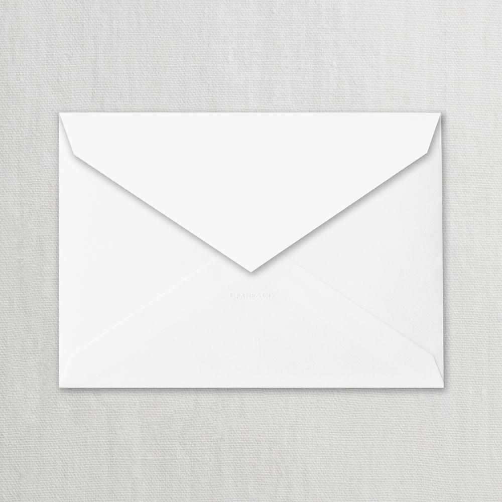

-

Who even write letters still?
It takes a long time to send letters.
-

Emails are not fun.
Young people now prefer instant messaging.

It is fun to do and is interactive.
Quicker and more efficent.
About "If you talk to a man in a language he understands, that goes to his head. If you talk to him in his own language, that goes to his heart."
Nelson Mandela
World Without Borders will be a service that upgrades the old pen pal concept with instant messaging that young people are used to today in the form of an online chat app. Especially in the case of foreign language education, this is fantastic because it allows students to improve their language skills while having fun by conversing with native speakers their age. Certain tools will also be implemented that make this type of communication easier such as the ability to translate just an individual word or phrase, grammar checks, and speech to text.
Frequently Asked Questions
How do you notify your penpal to log on to World Without Borders website and start messaging you back?
You can click the bell that is located next to the time stamp that is above your conversation panel. Then you will be able to send a email to your penpal to notify them to log on.
What are the special characters used for?
If your language needs a special character then you can pick and choose the special character you need. Under the special characters option you can even choose emojis to send also.
How does the translating feature work?
All you need to do is choose the input language you are starting with. Then choose what language you want your input language to be translated to.
How can you send a picture to your penpal in your conversation?
To send a picture you need to click on the picture button which is located to the right of the send button, Then you choose the picture you want to send to your penpal.